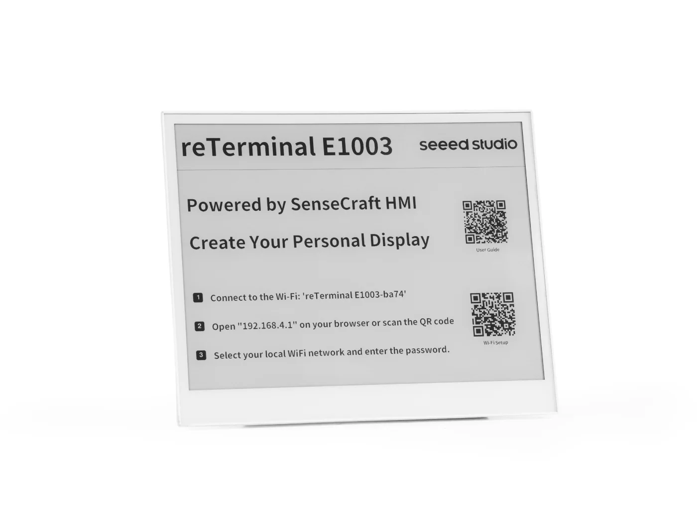

reTerminal E1003
Seeed Studio · Seeed reTerminal E1003 – 10.3" Monochrome (16-level grayscale) ESP32-S3 e-paper terminal
reTerminal E1003 is an 10.3" 1404x1872 E-paper Capacitive touch ESP32 display board by Seeed Studio based on the ESP32-S3 with 32MB flash, 8MB PSRAM.
Features, ports & interfaces
- E-paper display (Monochrome (16-level grayscale))
- Capacitive touch
- 8 MB PSRAM
- 32 MB flash
- microSD (TF) card slot – up to 32 GB, FAT32
- Wi-Fi 4 (802.11 b/g/n, 2.4 GHz) – version from the ESP32-S3 datasheet
- Bluetooth 5 (LE) – version from the ESP32-S3 datasheet
- USB-C
- GPIO / IO port expansion
- Microphone
- Buzzer (sound alert)
- Battery: 3000 mAh (~6 months)
- Metal enclosure
Specifications
| Parameter | Value | Source |
|---|---|---|
| Screen size | 10.3" | source |
| Resolution | 1404x1872 | source |
| Panel | E-paper | source |
| Shape | Rectangular | |
| Touch | Capacitive | source |
| MCU / SoC | ESP32-S3 | source |
| MCU family | ESP32-S3 | source |
| Flash | 32MB | source |
| PSRAM | 8MB | source |
| Wi-Fi | 2.4 GHz Wi-Fi 802.11 b/g/n | source |
| Bluetooth | Bluetooth 5.0 | source |
| USB | USB Type-C (5 V / 1 A input) | source |
| Category | Seeed Studio (SenseCAP / reTerminal) | |
| Battery | 3000 mAh (~6 months) | source |
| Buzzer | Buzzer (sound alert) | source |
| Dimensions | 224 × 187 × 18.6 mm | source |
| E-paper | Monochrome (16-level grayscale) | source |
| Expansion / IO | Pin header UART / I²C / GPIO | source |
| SD / TF | microSD up to 32 GB | source |
| Other sensors | Temperature & humidity sensor | source |
| Case / shell | Yes – metal enclosure | source |
| Vendor | Seeed Studio |